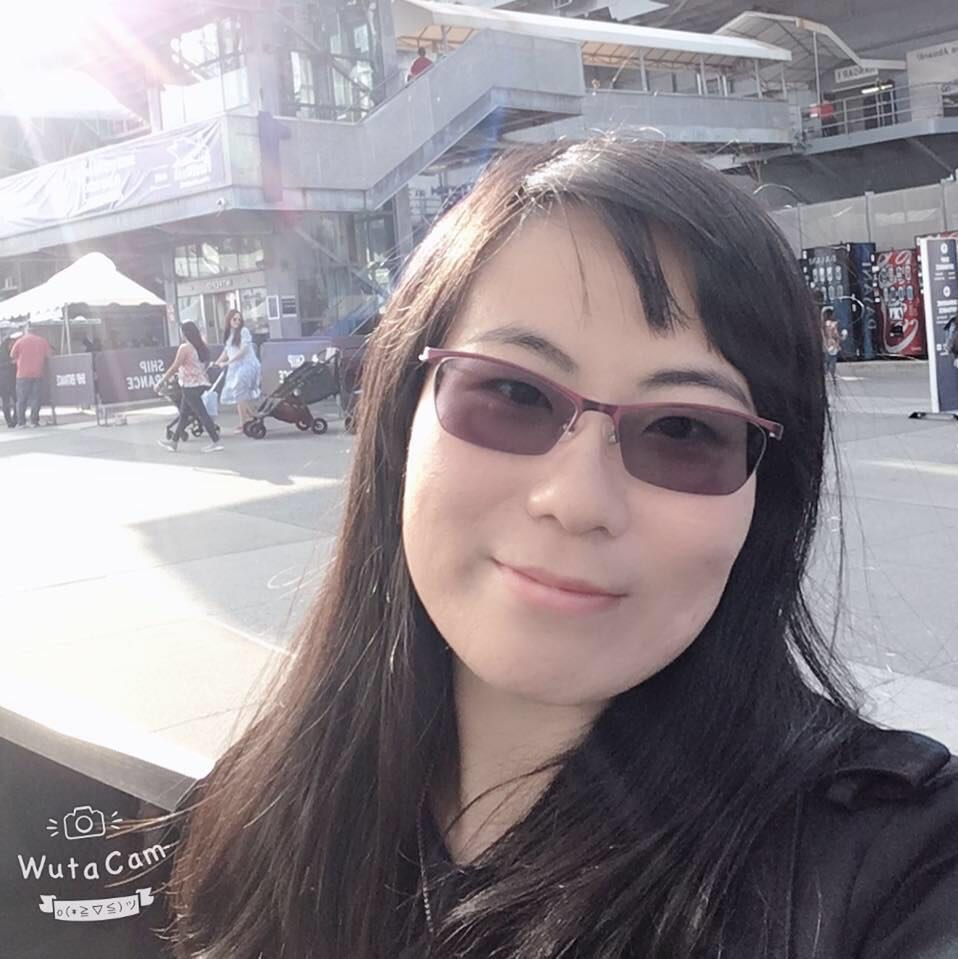

| 
|
I'm now a Machine Learning Engineer at SAIC Innovation Center, helping build the AI system for autonomous driving in Human Machine Intelligence Department. I received a Ph.D. in Computer Science from New Jersey Institute of Technology in 2018, a LL.B. in Civil Law and a B.E. in Information Security both from Nankai University in 2012. My advisor is Professor Zhi Wei. I am broadly interested in deep learning, machine learning, data science, and biostatistics. In particular, I recently focus on:
Contact: xg54 AT njit DOT edu |